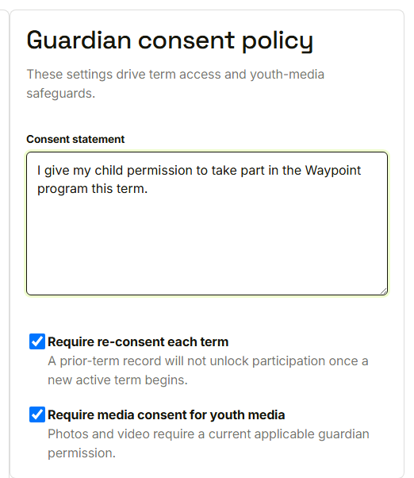
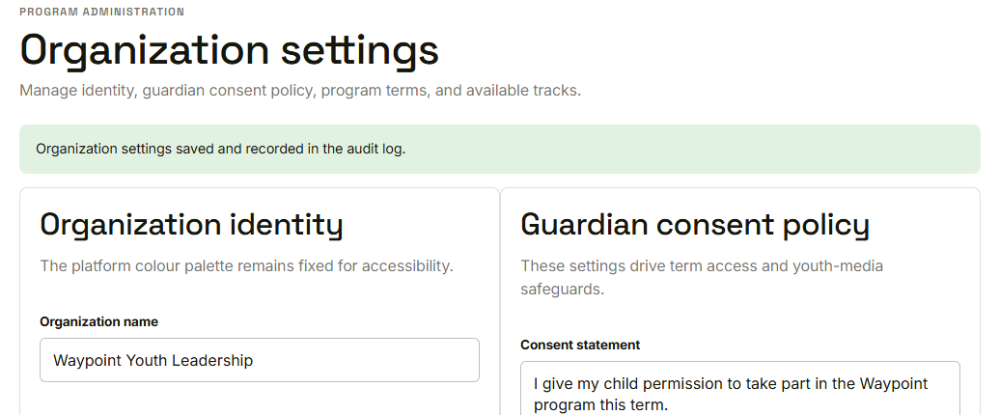
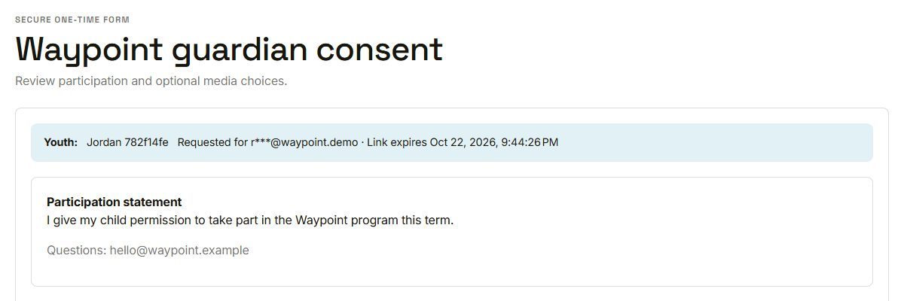

Waypoint · Video 024
Setting the consent policy
One policy, three controls
Guardian consent policy

Statement, re-consent each term, media consent
Saved and recorded

Saved and recorded in the audit log
What the guardian sees

The statement appears on the guardian consent form
Things to remember
Statement and two rules, set in one place
Saving is recorded in the audit log
Only a program administrator can change it
No participation consent, no participation for a minor